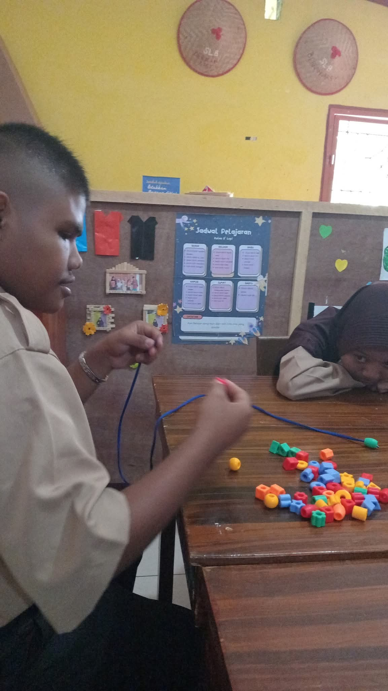

Calistung
Membaca, menulis, dan berhitung dengan cara yang sabar dan bertahap.
Pendampingan anak berkebutuhan khusus
Deva Course hadir untuk membantu anak belajar, berkembang, dan lebih percaya diri melalui pendampingan yang sabar, terarah, dan sesuai kebutuhan anak.

Tentang
Deva Course adalah tempat belajar dan pendampingan bagi anak-anak yang membutuhkan perhatian khusus dalam proses tumbuh kembang dan pendidikan.
Kami percaya bahwa setiap anak memiliki potensi yang luar biasa dan membutuhkan pendekatan belajar yang berbeda sesuai dengan kebutuhannya.
Dengan suasana belajar yang nyaman dan pendampingan yang penuh kesabaran, kami membantu anak berkembang secara akademik, sosial, emosional, dan spiritual.
Program
Program disusun agar anak merasa nyaman, orang tua lebih tenang, dan perkembangan anak dapat terlihat secara bertahap.
Membaca, menulis, dan berhitung dengan cara yang sabar dan bertahap.
Pendampingan belajar sesuai kebutuhan, kemampuan, dan kondisi anak.
Aktivitas untuk membantu gerak, koordinasi, dan kesiapan belajar anak.
Membantu anak belajar lebih tenang, terarah, dan menyelesaikan tugas.
Pendampingan membaca Al-Qur'an dengan suasana yang nyaman.
Bantuan belajar pelajaran sekolah dasar sesuai kebutuhan anak.
Membantu anak mengenal rutinitas belajar, instruksi, dan kemandirian awal.
Melatih kebiasaan sederhana agar anak lebih percaya diri dalam keseharian.
Pendampingan
Kami mendampingi anak dengan berbagai kebutuhan belajar dan tumbuh kembang, seperti:
Kami memahami bahwa setiap anak memiliki kebutuhan yang berbeda. Oleh karena itu, program akan disesuaikan dengan kondisi dan perkembangan masing-masing anak.

Metode
Setiap anak mendapatkan perhatian sesuai kebutuhannya.
Aktivitas dirancang agar anak merasa nyaman dan senang belajar.
Orang tua dapat melihat perkembangan anak secara berkala.
Kami percaya keberhasilan anak membutuhkan kerja sama yang baik dengan keluarga.
Keunggulan
Anak didampingi dengan cara yang tenang, ramah, dan tidak terburu-buru.
Lingkungan dibuat mendukung anak agar merasa diterima dan percaya diri.
Kegiatan disesuaikan dengan kemampuan, kebutuhan, dan kesiapan anak.
Kami memperhatikan kemajuan kecil yang penting bagi keseharian anak.
Orang tua dilibatkan agar pendampingan di rumah dan tempat belajar selaras.
Jadwal dan materi dapat dibicarakan sesuai kebutuhan keluarga.
Galeri
Berbagai aktivitas dirancang untuk membantu anak belajar, bermain, bersosialisasi, dan mengembangkan potensinya secara optimal.


Testimoni
Perkembangan anak tidak selalu besar sekaligus. Langkah kecil yang konsisten tetap sangat berarti bagi anak dan keluarga.

"Alhamdulillah, setelah mengikuti pendampingan di Deva Course, anak kami mulai lebih tenang saat belajar dan lebih percaya diri menyelesaikan tugas."
Orang tua murid Deva Course
Konsultasi
Kami siap membantu menemukan program yang sesuai dengan kebutuhan dan potensi anak.
Kontak
Silakan hubungi kami untuk bertanya jadwal, program, atau kebutuhan pendampingan anak.
Alamat lengkap Deva Course akan ditambahkan di sini.
Senin - Sabtu, 08.00 - 17.00 WIB